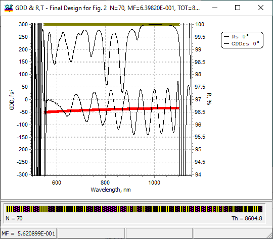
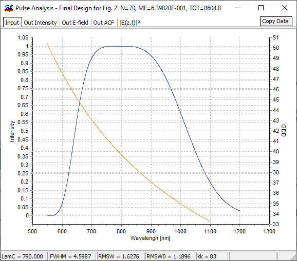
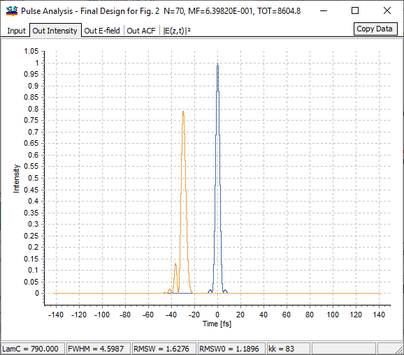
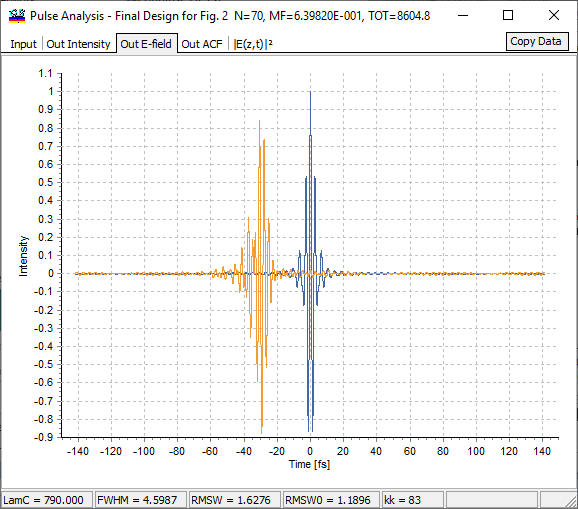
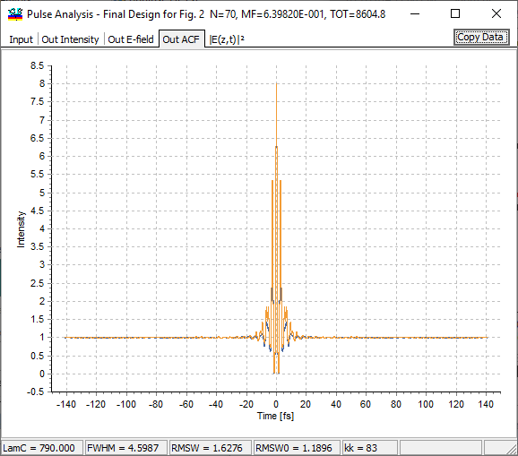
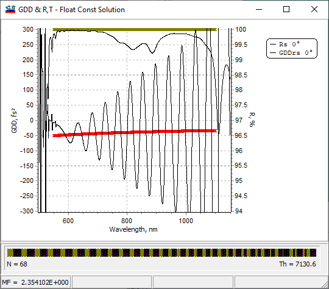
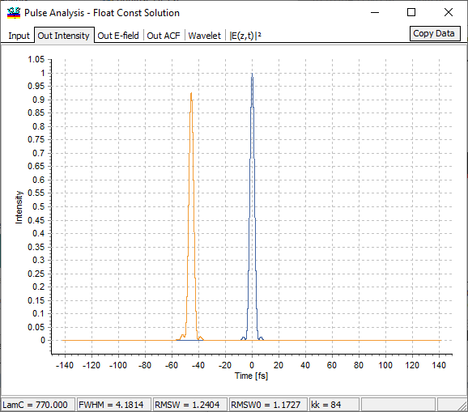

Pulse Analysis
Pulse Analysis
Navigation: OptiLayer Menu Commands > Analysis Menu >
Pulse Analysis
` <integralsinhintereval.html>`__ ` <idh_menu_analysis.html>`__ ` <pulse_options.html>`__
In ultrafast optics, it is often important to study the temporal shape of a reflected pulse. As an example, we will first consider a one-octave dispersive mirror designed to compress a pulse with GDD = 40fs2 and TOD = 10fs3 with a carrier wavelength of 790nm. For reference, the solution based on simple synthesis with Gradual Evolution and Needle Optimization methods using a conventional target is shown below:

Pulse Analysis tabs
The first tab (Input) of the Pulse Analysis dialog shows input pulse parameters specified in the Pulse Options dialog.

In this case we used a Super-Gaussian shape for the pulse intensity in the range of 550 - 1200 nm, and the phase was derived from the target GDD with the opposite sign. It is natural to assume that in the ideal case, the specified target should exactly match the pulse phase with the opposite sign in order to have the best compensation of the phase modulation (chirp). The central (carrier) wavelength of this pulse was 790 nm. The Output Intensity tab represents the intensities of Fourier-limited and output pulses in the time domain, making it very convenient to estimate the quality of compression and expected distortions.

For example, in this case, the compression is not good as one can see satellites after the pulse. The problem appeared due to deviations in the average GDD level of the designed mirror from the target values.
Our E-Field tab shows the approximate time behavior of the electric field in this pulse (both Fourier-limited and output pulses).

Our ACF tab represents Auto-correlation functions (ACF) of the Fourier-limited and output pulses.

|E(z,t)|2 tab shows a 2D time-coating coordinate distribution of the squared amplitude of the electric field.

The Layer boundaries check box controls the additional display of layers on this plot. This representation may be quite helpful for studies of laser damage problems. Since all discussed plots usually include quite many data points, we provide an additional Copy Data button. With its help, you can copy data with a specified step (or span), therefore decreasing the total amount of data points and making it more suitable for further analysis.
Better solution obtained with floating constants approach
With the floating constant approach, it is possible to obtain another solution to the same problem. It has significantly higher oscillations of GDD.

Nevertheless, the shape of the output compressed pulse is significantly better, and this is confirmed with the Pulse Analysis option.
